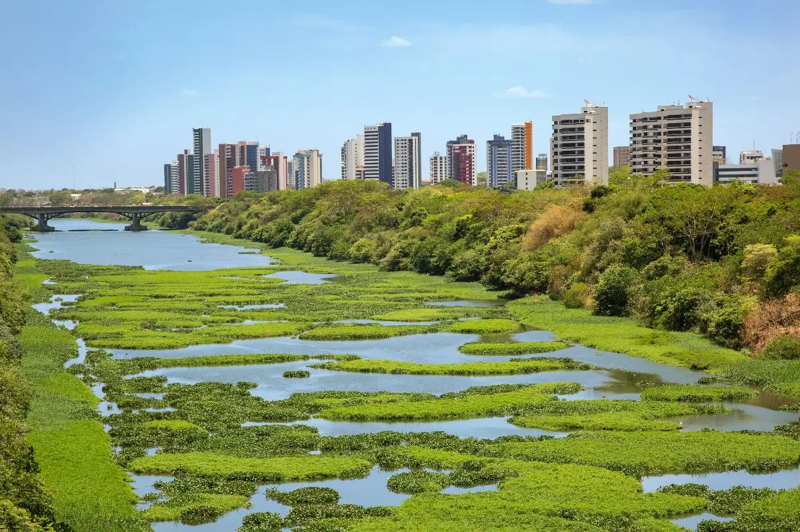

O Piauí é um estado do Nordeste do Brasil, com capital em Teresina. É conhecido por suas paisagens naturais como o Delta do Parnaíba e o Parque Nacional de Sete Cidades. A cultura piauiense tem forte influência do forró e do baião, além de festas populares como o São João e o artesanato com renda de bilro. A economia do estado é baseada na agricultura, destacando-se na produção de soja, milho e algodão, além do setor de energia solar. O turismo também tem crescido, principalmente no ecoturismo em áreas como o Parque Nacional de Jericoacoara, e a gastronomia local é marcada por pratos como o carneiro guisado e tapioca.
